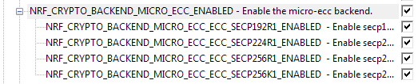
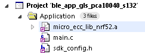
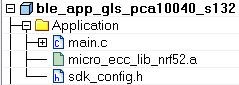
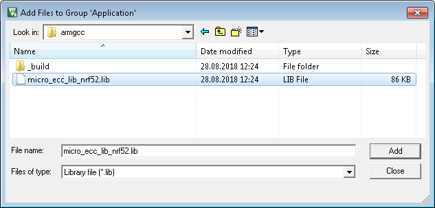

The micro_ecc backend provides functionality to use micro_ecc in nrf_crypto.
- Note
- All APIs in this backend are intended to be internal to nrf_crypto.
Configuration
See Configuring nrf_crypto frontend and backends for details on enabling this backend.
Available frontend API
See Cryptography library - nrf_crypto for information about which nrf_crypto APIs can use this backend.
Installing micro-ecc
The cryptography library expects to find the compiled micro-ecc library in <InstallFolder>\external\micro-ecc\micro-ecc.
To install micro-ecc, complete the following steps:
- Install version 4.9-2015-q3-update of the GCC compiler toolchain for ARM. You can use ARM's Launchpad to find the toolchain for your operating system.
- Make sure that
make is installed (see, for example, MinGW, GNU Make, or Xcode).
- Clone the micro-ecc GitHub repository into
<InstallFolder>\external\micro-ecc\micro-ecc.
- Enter the subdirectory for the SoC and the toolchain that you are using to build your application:
InstallFolder\external\micro-ecc\nrf52_keil\armgccInstallFolder\external\micro-ecc\nrf52_iar\armgccInstallFolder\external\micro-ecc\nrf52_armgcc\armgcc
- Run
make to compile the micro-ecc library.
- Note
- If you compile the micro-ecc library without using the provided Makefiles, make sure to use the default compilation options with -Os and optimization level 3. If you change the preprocessor macros (most importantly,
uECC_VLI_NATIVE_LITTLE_ENDIAN=1), the library might not work properly.
Enabling micro-ecc support in selected examples
Some of the examples in this SDK use nrf_crypto to demonstrate the LESC functionality. For a list of these examples and the backends they support, refer to the table showing supported nrf_crypto backends. The examples marked with an asterisk in the table can be configured to use micro-ecc, but you must first manually add the micro-ecc library file to the project.
Follow these steps to enable micro-ecc support in these examples.
- Enable the micro-ecc backend by setting NRF_CRYPTO_BACKEND_MICRO_ECC_ENABLED to 1 in a text editor or through a graphical interface.

Enabling micro-ecc backend
- Disable the corresponding configuration parameter in other nrf_crypto backends in order to enable micro-ecc.
- Add the micro-ecc library file to the project. Make sure to select the correct library appropriate for your architecture and compiler version.
- SES
Use the drag-and-drop feature to add the correct library file to any folder in the project file view. The file will be displayed in the project file list.

Adding the library file in SES
- IAR
Use the drag-and-drop feature to add the correct library file to any folder in the project file view. The file will be displayed in the project file list.

Adding the library file in IAR
- Keil
In the project file view, right-click the Application folder to open a context menu. Select Add existing file to group 'Application'.
In the pop-up window that opens, change the file type to *.lib and select the correct version of the library to add.

Selecting the library file in Keil
Click Add.
- GCC
In the project makefile, add a line with a path to the library in the following scheme:
LIB_FILES += \
$(SDK_ROOT)/external/micro-ecc/nrf52hf_keil/armgcc/micro_ecc_lib_nrf52.lib